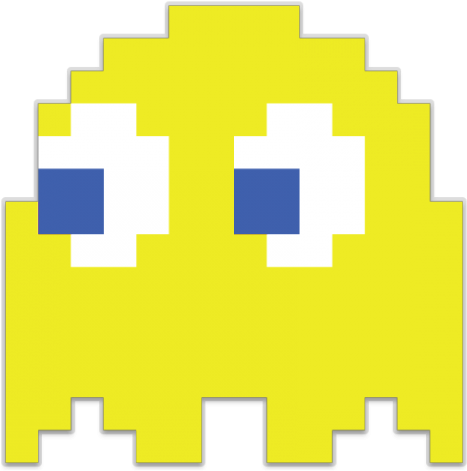
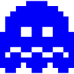
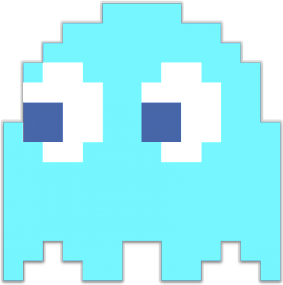
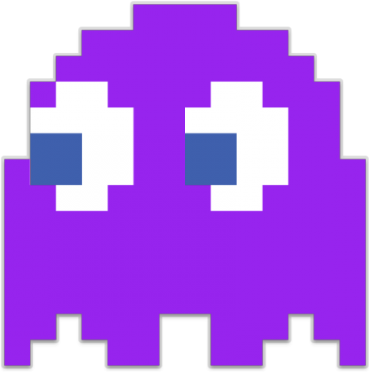
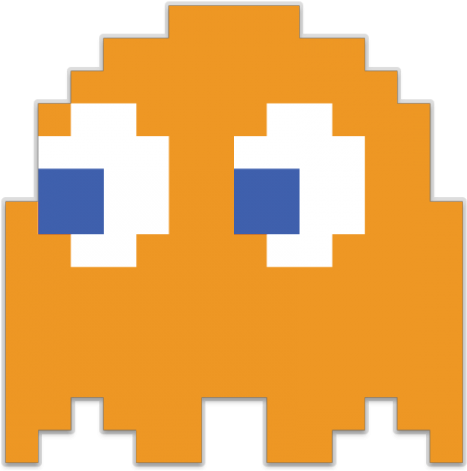
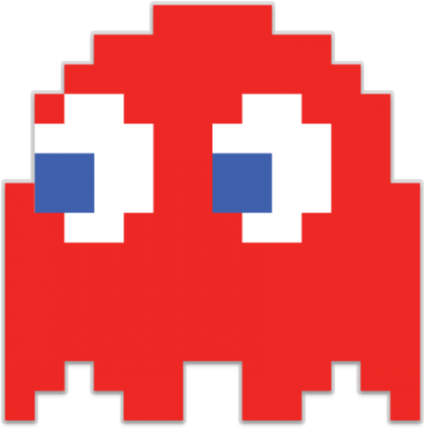
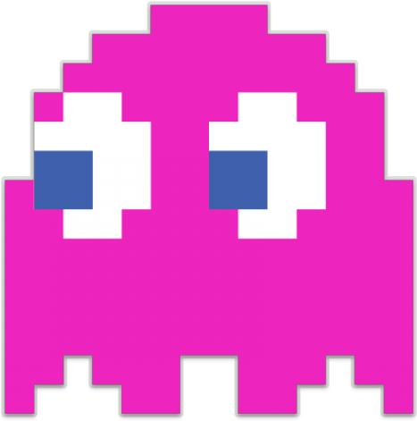
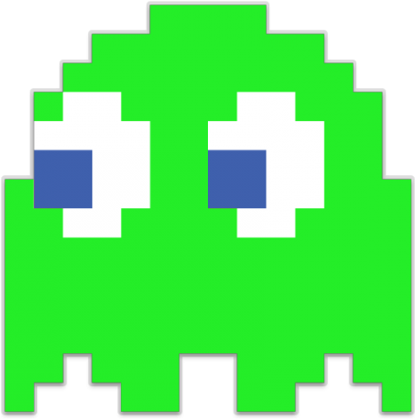

PAC-MAN
Personajes
Durante el juego, podrás encontrarte con 8 diferentes tipos de fantasmas.
Tipos de personajes:
- Fantasma Amarillo:

- Fantasma Cabecilla: Si agrupas 5 fantasmas de este tipo, ganarás directamente la partida.

- Fantasma Celeste:

- Fantasma Morado:

- Fantasma Naranja:

- Fantasma Rojo:

- Fantasma Rosa:

- Fantasma Verde:
